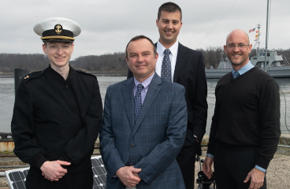
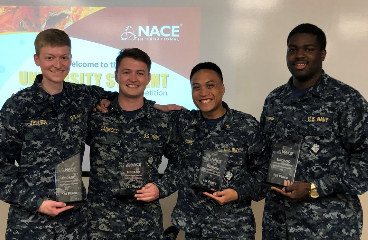
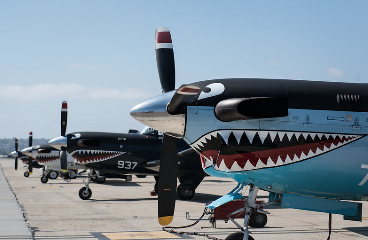
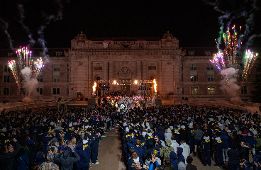
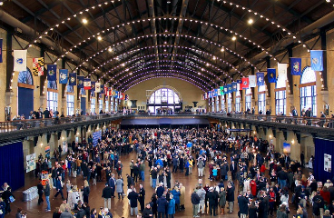

My passion is in developing and communicating data-driven solutions to highly technical problems.

Trident Research Project
Developed a machine-learning model for prediction of optical turbulence in near-maritime environments.

Capstone Design Competition
Lead a team to design, integrate, and build a semi-autonomous corrosion detection robot for a national design competition.
Market Volatility from Options Flows
Used a SQL database of daily SPY options volume to predict future market volatility.
During my career at the Naval Academy, I had the pleasure of serving in a variety of small and large unit leadership roles.
The leadership education I received concurrently with my academic classes helped me to excel in managing small teams.
I learned to appreciate the importance of understanding the strengths of each team member in order to maximize cohesion and effectiveness.
Effective project management, team communication, and deliverable communication helped me develop and succeed as a leader in technical projects.

PROTRAMID I Company Commander
As the Company Commander of I Company, I was responsible for the training, safety, and accountability of 84 of my peers for a 4 week military familiarization and training program.
The Company maintained accountability while underway on a ballistic missile submarine, attached to a training air-wing, on a USN destroyer, and conducting training evolutions at USMC Camp Pendleton.

1st Regiment Operations Officer
As the Regiment Operations Officer, I led a team of 36 staff members in planning and executing a wide range of events for over 2000 Midshipmen.
I worked to communicate quickly and accurately up and down the chain of command. As a staff, we scheduled transportation, professional development talks, spirit events, and physical trainings.

3rd Battalion Supply Officer
As the 3rd Battalion Supply Officer, I managed the treasury and was responsibile for purchasing the food and equipment required to run Battalion Events.
I developed a stronger appreciation for the importance of records management systems and rapid intra-organization communication.